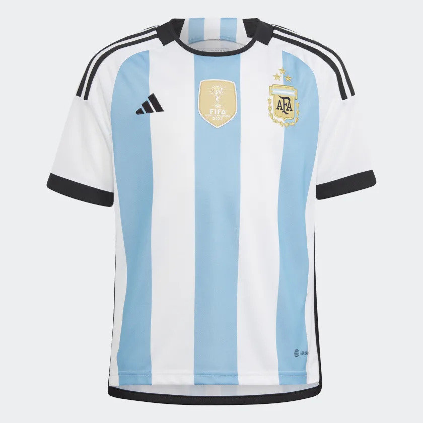

Thông tin áo đấu

Áo đấu của đội tuyển quốc gia Argentina là áo màu xanh đen và trắng, với hai sọc màu trắng rộng ở giữa áo. Đây là thiết kế truyền thống của đội tuyển Argentina và đã được sử dụng từ lâu.
Logo của Liên đoàn bóng đá Argentina (AFA) nằm ở phía trước áo, phía trên ngực trái. Ngoài ra, áo còn có logo của nhà tài trợ và các chi tiết kỹ thuật khác của nhà sản xuất áo đấu.
Áo đấu của đội tuyển Argentina thường được kết hợp với quần shorts màu trắng và tất màu đen. Áo đấu này được sản xuất bởi các hãng thể thao lớn như Adidas, Nike, Puma và các phiên bản dành cho nam, nữ và trẻ em đều có sẵn trên thị trường.